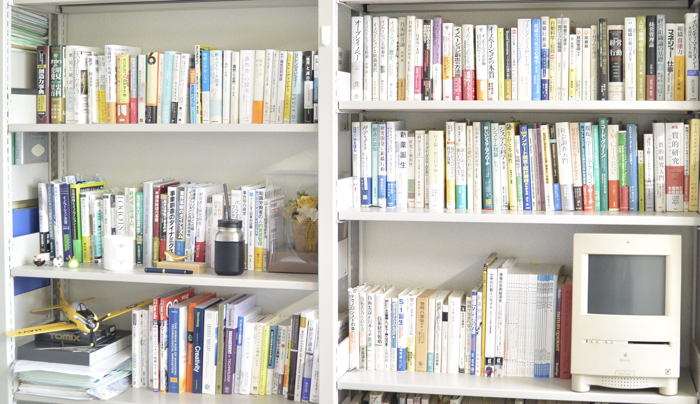

イノベーションへのアプローチは複雑で長くもありますが、「偶然」や「創発」といった予期しない事柄が鍵となったり、
切れ者だがチームのメンバーと相いれない「異端児」が前例の無いアイデアを提案したりすることがあります。
また、「目利き」と呼ばれる組織の幹部が、周囲の反対を押し切る形で異端児の活動を許容し、
結果として画期的なビジネスへと導くことが少なからずあります。
板谷研では、こうしたイノベーションにおける偶然やキーパーソンが絡む過程を探索しています。
これらの多くは稀有な事象なので、従来の計量的な分析では難しく、調査や分析にも工夫が必要です。
主にナラティブから抽象度を高めていく定性的方法による調査分析を行っています。
例えば、科学・技術では、発明と発見が創造的活動の中心となります。
発明は、新しく創る活動が中心となり、創るという点で、
個人の内発的モチベーションを喚起、チームや組織としての活動を活性化することや、
経営幹部も現場の臨場感を共有して臨機応変な関与をすることが鍵であることが明らかになりつつあります。
一方で、発見は、セレンディピティと称する偶然に見出されるものもあるなど、
そのプロセスには神秘的な側面も多く、特に組織の中でどのように生成されるのか、
促進するにはどうしたら良いのかという示唆はほとんど分かっていませんでした。
これまでに「邪魔をしない」すなわち、発見を志す研究者の自律性に任せて、
前例のない試行錯誤に没頭できるようにすることの重要性が、次第に明らかになってきています。
板谷和彦研究室
香川大学大学院
地域マネジメント研究科
香川大学大学院
地域マネジメント研究科
研究分野

担当講義
［経営管理論］
企業や自治体などの経営組織においては、必ず基盤となる組織のフレームとマネジメントのシステムが存在します。
本講義ではそれらと深く関わる理論・学説と、どのような役割と機能を有するか基礎的な理解を深めていきます。
本講義ではそれらと深く関わる理論・学説と、どのような役割と機能を有するか基礎的な理解を深めていきます。
［技術経営・イノベーション特論］
既存の組織やマネジメントに関わる基本的なフレームと理論に対して「技術」を効果的に活用するためには、何を考慮すべきかに関して考察していきます。
さらにイノベーション創出への道筋を先進事例から学んでいきます。
さらにイノベーション創出への道筋を先進事例から学んでいきます。
［定性的研究方法論］
社会的フィールドや様々な行動の背後に隠れた「意味」に着目し、これを再構成・理論化するのに有効な定性的研究方法論について学びます。
数量的なアプローチでは分析が困難なイノベーション創出過程における稀有な事例を掘り下げて分析するには有効な方法です。
数量的なアプローチでは分析が困難なイノベーション創出過程における稀有な事例を掘り下げて分析するには有効な方法です。
[創発の方法]
ある事象や事柄の特性が、構成する部分の性質の総和では説明できないことを創発と言います。
ではこの創発の概を教育や研究に活かしていくには、どうずれば良いのか。
この問いに対して、通常の科学における方法、学際的に学ぶための意義や、理系と文系の分野を相互に行き交うための方法について学びます（創発科学研究科の共通科目となります）。
ではこの創発の概を教育や研究に活かしていくには、どうずれば良いのか。
この問いに対して、通常の科学における方法、学際的に学ぶための意義や、理系と文系の分野を相互に行き交うための方法について学びます（創発科学研究科の共通科目となります）。